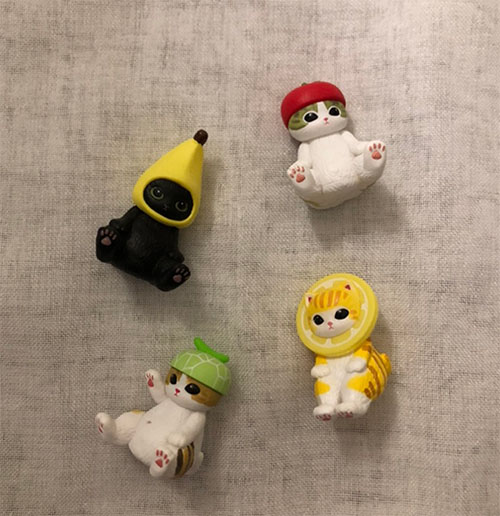
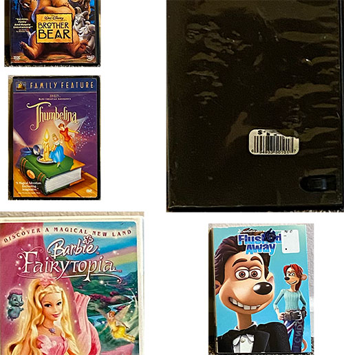

I may have retired from the gaming scene for about a decade but every so often i get pulled back into it. Because of this, even i must admit that games need some attraction, otherwise they'll be forgotten...like the Tamagotchi pets #rip.
There's levels to this attraction of course. The OG Article does a fabulous job at detailing it, and i'm here to absolutely regurgitate it back (in a funny and digestable way of course). It all comes down to 7 game design essentials and principles that must be followed, or at least, taken into account.
For starters, whatever the game may be, you wanna set clear goals and objectives, otherwise your players are gonna be lost in the sauce, roaming to no end and staying in the same place that frankly, even they begin to realize there's no point to this madness. Remember, SIMPLE IS BETTER! For the sake of my sanity, don't creative confusing mechanics in a game–you'd only lose potential aspiring gamers out there. And of course, familiarity is your best friend, people know what they've seen a gazillion times–keep graphics appealing and controls recognizable pretty pls, thanks.
Now to the next crucial points: the stuff we never think about. Rewards, sound, and balance. What's the point of playing a game if im not gonna get rewardes...i mean cmon now. Ambience is everything, if you can use sounds to elevate the expereince, by all means do so! dont be boring, but stay well balanced–we dont wanna overwhelm these folk #videogameretirees
04
Visual Thinking Analysis
Part One

not me, 2025
The images chosen are all about the cute trinkets my peer owns. The most obvious thing to notice of these trinkets are that they are cats while the most mysterious aspect is that they all wear a different hat. This is what makes them interesting. My peer could make up their personalities and origin story and have close-up portraits of each kitty. The background and where these lil guys were taken could be different to display the fun side of these trinkets. Maybe they're hiding behind objects and playing peek-a-boo with the audience and when they click on them, it zooms in and displays them up close.
Part Two

me, 2025
id like to think my image is interesting in the way that you see the front cover of each dvd, and some of them are cropped out or smaller/bigger than others to draw in importance of how i feel. These are some of the movies that mean a lot to me and how they've shaped my personality and own values to be honest. They show my love of movies, especially the physical media of owning a movie, and not depend on a streaming service that may take a movie out. To make these images better, Im gonna wanna photoshop the background away completely and focus on the cover, and maybe have a blowup up the disk itself OR, i take a picture of an old tv and my dvd player and then have the viewer pick a dvd to play and then it'll tell a lil bit about the movie and my feelings towards it. wait i think that's awesome i may do that now.
When we see a piece of media, we view it in hierachy. Maybe we see the title first because it's bigger, then the smaller text, and if there's an image, we will always focus on the image before anything else. Images are important as they are a snippet into what's to come in the following text or they themseleves tell a story. But if we decide to look over it, the story will never be heard i fear. And that, my friend, is a loss.
Visual literacy and thinking is rare in today's society. We get bombarded with media in every direction we often lose ourselves in it, forgetting to slow down and take a breathe. When it comes to images, the article points to piecing images that draw curiosity and provoke thinking. We don't want to just see an image, we want to see a story. If the image can't be woven into something people can connect to or learn from, that's not an image, that's a billboard ad you pass while speeding on the freeway you never even noticed in the first place.
We need to prompt viewers into asking questions with what they see. Take LilFrog's website. It's entire page is a story full of images layed out in different ways with text underneath to tell the story of the images as they progress. The colors and composition, in conjuction with text are ways you can invite viewers to view your image. Images aren't boring, you just need to do better: create a story.
Let's talk overlays everyone. Personally, i love a good overlay...did you catch that? good overlays. NOT bad overlays. There's a difference, and i'm going to make sure you know by the time i finish this word vomit okay. i'll try my worst, and give it my weakest.
First things first: do you even know what an overlay is anyways? yeah, i didn't think so (pretend you don't know if you do, and if you dont know, thats even better). As the author of the article i linked at the top put it, An oVeRlAy "refers to a content box that is displayed on top of another page". It's this little square or rectangular box that appears over your screen that has info...think of those boring and absolutely waste of space ads that pop up after opening a website trying to make you subscribe to their newsletter nobody opens. i mean who even checks their email anymore (i do, and i think thats a sign of me getting older im so sad...not bc im getting older but that i shouldn't even have an email account to worry about like i could totally talk about that but thats not the goal of this)
Great! You know what overlays are. But now it's time to get serious. Overlays are a gift, a gift that should be given at special moments ya know? That being said, don't waste it, and don't abuse it. As the article notes, you need to handle overlays with care, and not jam-pack them with so much info that you might as well make a new page instead of an overlay. Know your W's:
Who is the target audience?
What action is the user supposed to take?
When will the overlay appear, and will it be an interruption?
Where will the overlay appear on the page?
Why does this need to be in an overlay instead of within a page?
These are all the factors that need to be taken into account. I, no, the public begs you, don't give gifts away like some medicore clown, they become less special.
It is without question, that if we ever want users to do anything like fill out forms, we designers must, for the love of god, do everything in our capacity to design user friendly experiences. If we don't take into account simple best practices, i fear we will never go anywhere. So let me explain to you some totally usable techniques and applications and why they matter in the realm of something as boring as filling out forms.
Forms are boring. You know it. I know it. Everyone knows it. Knowing this, asking boring, complicated, useless, irrelevant questions won't make anyone happy. We're trying to get a move on, so let's keep things simple! Ask relevant, juicy, straight to the point stuff. On that note, we don't wanna bombard the poor folk with all these questions ya know? Let's break them up in eatable pieces so they don't throw up and clock out.
Let's get the facts straight: for best form practices, avoid all confusion. Be clear, succinct, and label things. We're all about clarity in this establishment, with mindful placeholders where necessary. Look at Duolingo for example! They have a bar showing you how close you are at completing the form, include fun and responsive graphics, and their questions go straight to the point.